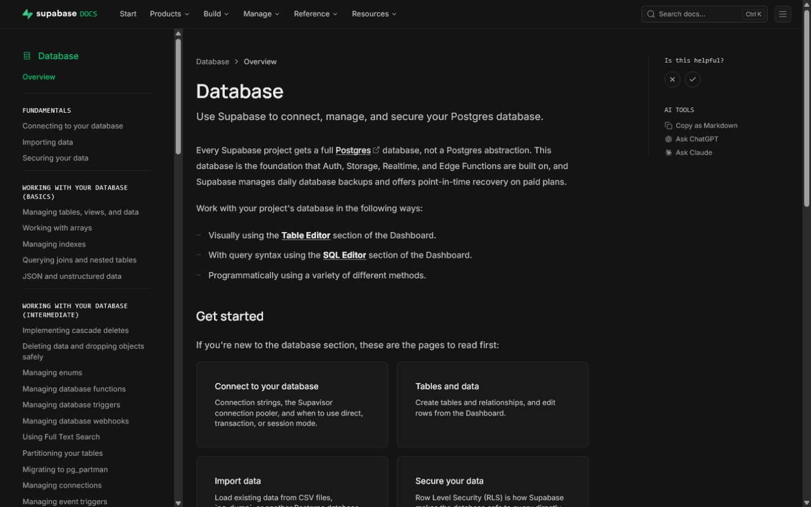

Tables, Fields, Records & Relationships
Output: Draft Database Table Plan for Supabase
Student Edition - expanded lesson explanations
Today: what DATA lives behind those screens.
Your wireframes show WHAT users see. But WHERE does that information come from? It comes from a database.
A database is an organized collection of data stored electronically. Think of it as a super-powered Excel spreadsheet.
In Supabase, your database uses PostgreSQL, the most powerful open-source database in the world.
Every app with dynamic content (content that changes) needs a database behind it.
A table stores ONE type of data. Each table represents a "thing" in your app:
👤
users
All user accounts
📦
items
Lost/found items
🏷️
categories
Item categories
💬
claims
Claim requests
🔔
notifications
User alerts
📍
locations
Campus buildings
Fields are the COLUMNS in your table. Each field stores one piece of information:
| Type | Stores | Example | Supabase Type |
|---|---|---|---|
| text | Words, sentences | "Black umbrella" | text / varchar |
| integer | Whole numbers | 42, 100, 0 | int4 / int8 |
| float | Decimal numbers | 19.99, 3.14 | float4 / float8 |
| boolean | True or False | true, false | bool |
| timestamp | Date + time | 2026-07-12 08:30:00 | timestamptz |
| uuid | Unique identifier | a1b2c3d4-... | uuid |
Each ROW in a table is one record. One item, one user, one entry:
| id | title | category | status | location |
|---|---|---|---|---|
| 1 | Black Umbrella | Personal | lost | Building A |
| 2 | Scientific Calculator | School | found | Library |
| 3 | Red Water Bottle | Personal | claimed | Cafeteria |
| 4 | Student ID | Documents | found | Gym |
Each row = one item. When a user posts a new lost item, a NEW ROW is added.
Every table needs a primary key: a unique identifier for each record. No two records can have the same ID.
In Supabase, the id column is automatically created as UUID. You don't need to manage it.
Tables don't live in isolation. They CONNECT to each other through relationships.
Example: An item is posted by a user. The items table needs to know WHICH user posted it.
This connection is made through a foreign key: a field in one table that references the primary key of another table.
ONE user can have MANY items.
How? The items table has a user_id field pointing to the user who created it.
users (1)
↓ has many
items (many)
Real examples:
This is the MOST COMMON relationship in apps.
The user_id in items matches the id in users. That's the link. Now we know Maria posted the umbrella.
Some relationships go BOTH ways:
Solution: create a junction table (also called a join table):
students ←→ enrollments ←→ courses
(student_id + course_id in the enrollments table)
| Type | Example | How to Implement |
|---|---|---|
| One-to-One | 1 user → 1 profile | user_id in profile table (unique) |
| One-to-Many | 1 user → many posts | user_id in posts table |
| Many-to-Many | students ↔ courses | Junction table with both IDs |
For most student projects, One-to-Many is all you need. Keep it simple.
Look at your wireframes and ask: "What DATA does this screen display or collect?"
| Screen | Data Needed | Table |
|---|---|---|
| Login | Email, password | users (handled by Supabase Auth) |
| Home Feed | List of items | items |
| Post Form | Title, desc, photo, category | items (insert) |
| Detail View | Full item info + poster name | items + users (join) |
| Profile | Name, email, avatar | profiles |
Good news: you DON'T create a users table for login. Supabase has a built-in auth.users table that handles:
BUT: You'll create a separate profiles table for extra user data (name, avatar, role, bio).
Key pattern:
id matches the auth user's IDThis is the STANDARD pattern for Supabase apps. Almost every project uses it.
| Rule | Example | Bad Example |
|---|---|---|
| Table names: plural, lowercase | items, users | Item, tbl_Users |
| Field names: snake_case | created_at, user_id | createdAt, UserID |
| Foreign keys: referenced_table_id | user_id, category_id | uid, cat |
| Booleans: is_ or has_ prefix | is_active, has_photo | active, photo |
| Timestamps: _at suffix | created_at, updated_at | date, time |
Follow these from the start. Renaming later is painful.
| Field | Type | Purpose |
|---|---|---|
id | uuid | Unique identifier (Primary Key) |
created_at | timestamptz | When the record was created |
updated_at | timestamptz | When last modified (optional) |
user_id | uuid (FK) | Who created this record (if applicable) |
Supabase auto-generates id and created_at for you. Just add your custom fields.
Most apps need a STATUS field to track where something is in its lifecycle:
Lost & Found
lost → found → claimed
Order System
pending → processing → completed
Task Manager
todo → in_progress → done
Store as text with predefined values. In FlutterFlow, display with colored badges.
Before finalizing your schema, ask: "What questions will my app ask the database?"
If you can't answer a question with your current fields, you need to add one!
Step 1: List all "things" in your app (nouns) → tables
Step 2: For each table, list properties → fields
Step 3: Choose data types for each field
Step 4: Add id, created_at, user_id to every table
Step 5: Identify relationships (who owns what?)
Step 6: Add foreign key fields
Step 7: Check: can my screens query what they need?
For most student projects, you need exactly:
That's it. 2-3 tables. Don't over-engineer. You can always add more tables later.
Stable nouns such as users, items, and categories usually become tables.
Each field needs a name, data type, and rule for whether it is required.
Foreign keys connect records without copying the same information everywhere.
Designing tables one screen at a time creates duplicate fields and conflicting data.
Model the shared entities first, then check that every screen can query them.

🎯 We'll learn Dart programming basics: variables, types, functions, conditionals.
This prepares you for FlutterFlow's custom actions later.